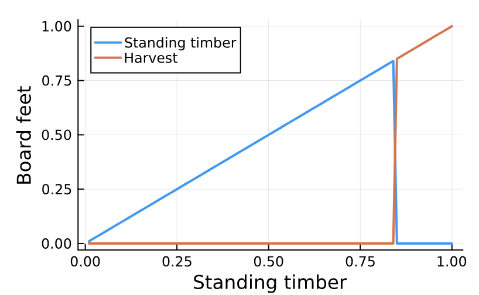
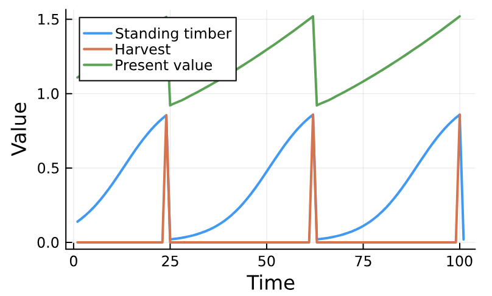

ValueFunctionIterations.jl
ValueFunctionIterations.jl is a package for solving stochastic dynamic programs using the value function iteration algorithm. The library is designed to solve dynamic programs with continuous state space, but it can also accomidate discrete state variables.
How to
Dynamic programs are defined and solved using the DynamicProgram function. This function requires a function that defines the rewards R(s,u,X,p), the state transition function F(s,u,X,p), a componenet vector of parameters p defined usng the ComponentArrays library, a matrix u with all possible actions, a random variable object X, the discount factor $\delta$, and a regular set of grid point for each dimension of the state space grid.... The grids must be define as an AbstractRange (e.g., 0:0.1:1) and the random variables X are defined using the AbstractRandomVariables interface.
The following example defines a dyamic progam to estimate the optimal rotation time for a timber stand that has some probability of experince damage before harvest.
using Plots, ValueFunctionIteration, ComponentArrays, Distribtions
# Income from harvesting trees
function R(s,u,X,p)
if X[1] == 0.0 && u[1] == 0 # if neither damage or harvest recieve nothing
return 0
elseif u[1] == 1 # If harvesting occurs recive net revenue
return s[1]-p.c
else X[1] == 1 # If damage occurs, harvest and revice the salvage value (X[2])
return X[2]*s[1]-p.c
end
end
# State update function
function F(s,u,X,p)
if X[1] == 0.0 && u[1] == 0 # if neither damage or harvest allow growth
return s[1]*exp(p.r*(1-s[1]/p.k))
else # If harvesting or damage occurs go to replanted biomass
return 0.02
end
end
# Parameters
# r: growth rate, k: maximum growth, c: cost of harvest, p_s: price for damaged timber
p = ComponentArray(r = 0.15, k = 1.0, c = 0.25)
# Harvest levels (0 or 97.5%)
u = action_space([0.0,1.0])
# Damage levels (0 or 97.5%) and probabilities (0.99 and 0.01)
X1 = RandomVariable([0.0 1.0;], [0.99, 0.01])
# Define quadrature scheme for normally distributed salvage values using Gauss-Hermite quadrature
X2 = GaussHermiteRandomVariable(10,[0.5],[0.1^2;;])
# Combine the two random variables
X = product(X1,X2)
# Discount factor
δ = 0.99
# Grid of stand sizes
grid = 0.01:0.01:1.00
# Define and solve the dynamic program
sol = DynamicProgram(R, F, p, u, X, δ, grid; tolerance = 1e-5)
# Plot the policy function
Plots.plot(grid,broadcast(s -> s - s*sol.P(s)[1],grid), xlabel = "Standing timber",
ylabel = "Board feet", label = "Standing timber",linewidth = 2)
Plots.plot!(grid,broadcast(s -> s*sol.P(s)[1],grid), label = "Harvest", linewidth = 2)
plot!(size = (400,250))
Once we have a solved problem we can run simulations under the optimal policy using the simulate function.
states,actions,rewards,vals=simulate(sol,100)
Plots.plot(states[1,:], label = "Standing timber", linewidth = 2)
Plots.plot!(actions[1,:].*states[1,1:(end-1)], label = "Harvest", linewidth = 2)
Plots.plot!(vals[1:(end-1)], label = "Present value", linewidth = 2)
plot!(size = (400,250), xlabel = "Time", ylabel = "Value") Dynamic programs can take along time to run so you can build a problem without running it and evaluate the computation time by setting the solve key word argument in the DynamicProgram function to false. You can then run estimate_time on the model to evaluate performance bottle necks and then use solve! to run the model once you are happy with the predicted run time.
prob = DynamicProgram(R, F, p, u, X, δ, grid; solve = false, tolerance = 1e-5)
estimate_time(prob)
solve!(prob)